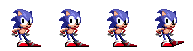
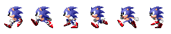
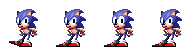

Dans cette activité, nous allons apprendre à réaliser une animation à partir d'images fixes en utilisant le principe du dessin animé. Cette technique est, entre autres, utilisée dans les jeux vidéos.
Nous utiliserons plusieurs séries d'images :
 sonic_1.png
sonic_1.png- sonic_2.png
- sonic_3.png
- sonic_4.png
Télécharger une archive contenant ces fichiers en cliquant ici
À faire vous-même 1.1
Saisissez, analysez et testez ce code
PImage[] tabIm;
int index=0;
int compt=0;
void setup(){
size(200,200);
PImage img=loadImage("sonic_1.png");
tabIm=new PImage[6];
for (int i=0;i<tabIm.length;i++){
tabIm[i]=img.get(48*i,0,48,48);
}
}
void draw(){
background(255);
if (compt==10){
compt=0;
index=index+1;
if (index>5){
index=0;
}
}
compt=compt+1;
image(tabIm[index],75,75);
}
L'analyse de l'exemple du "À faire vous-même 1.1" ne devrait pas vous posez de problème. Si l'utilisation de la méthode "get" de la classe Image vous ait inconnu, n'hésitez pas à étudier la fin de l'activité 2 de la série consacrée aux images : ici. Plus généralement, il est nécessaire d'avoir étudié la série d'activités consacrée aux images.
Les différentes images de "Sonic" sont "découpées" (à l'aide de la méthode "get") et placées dans le tableau tabIm.
for (int i=0;i<tabIm.length;i++){
tabIm[i]=img.get(48*i,0,48,48);
}
Il est important de comprendre les rôles des variables "index" et "compt" :
- "compt" permet de changer l'image de Sonic après "10 boucles draw" (si le changement d'image avait lieu à chaque tour de "boucle draw", l'animation serait beaucoup trop rapide). La variable "compt" permet de contrôler la vitesse de l'animation.
- "index" permet de parcourir le tableau tabIm (et donc d'afficher les différentes images de Sonic)
Il est possible d'obtenir un code un peu plus "propre" en utilisant des fonctions :
À faire vous-même 1.2
Saisissez, analysez et testez ce code
PImage[] tabIm;
int index=0;
int compt=0;
void setup(){
size(200,200);
tabIm=creaAnim("sonic_1.png",6);
}
void draw(){
background(255);
anim(tabIm,7,75,75);
}
void anim(PImage[] tabIm, int vitAnim,int x, int y){
if (compt==vitAnim){
compt=0;
index=index+1;
if (index==tabIm.length){
index=0;
}
}
compt=compt+1;
image(tabIm[index],x,y);
}
PImage[] creaAnim(String nomImg,int nbImage){
PImage img=loadImage(nomImg);
PImage[] tabImg=new PImage[nbImage];
for (int i=0;i<tabImg.length;i++){
tabImg[i]=img.get(48*i,0,48,48);
}
return tabImg;
}
Étudiez attentivement le code proposé dans le "À faire vous-même 1.2", plus particulièrement, intéressez-vous aux fonctions "creAnim" et "anim" (quels sont les paramètres de ces fonctions ? Que renvoient ces fonctions ? ...). Sinon, le principe reste identique à celui vu dans le "À faire vous-même 1.1".
Il est possible d'encore améliorer la gestion des animations en utilisant la programmation orientée objet et en créant une classe "SpriteAnim".
À faire vous-même 1.3
Saisissez, analysez et testez ce code
SpriteAnim an;
void setup(){
size(200,200);
an=new SpriteAnim("sonic_1.png",6,5);
}
void draw(){
background(255);
an.anim(75,25);
}
class SpriteAnim {
int index;
int compt;
int vit;
int nbImg;
PImage img;
PImage[] tabImg;
SpriteAnim(String nomImg,int nbImage, int vitAnim){
index=0;
compt=0;
vit=vitAnim;
nbImg=nbImage;
img=loadImage(nomImg);
tabImg=new PImage[nbImage];
for (int i=0;i<nbImg;i++){
tabImg[i]=img.get(48*i,0,48,48);
}
}
void anim(int x, int y){
if (compt==vit){
compt=0;
index=index+1;
if (index==nbImg){
index=0;
}
}
compt=compt+1;
image(tabImg[index],x,y);
}
}
Étudiez plus précisément la classe SpriteAnim (le constructeur et la méthode "anim").
À faire vous-même 1.4
Créez un programme permettant de déplacer Sonic à l'aide des flèches du clavier (droites et gauche). L'animation devra être adaptée à la situation (court vers la gauche, court vers la droite, attente en regardant vers la gauche, attente en regardant vers la droite). Sonic ne devra pas pouvoir sortir de l'écran.